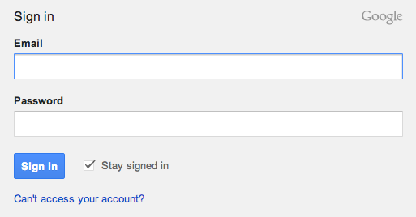
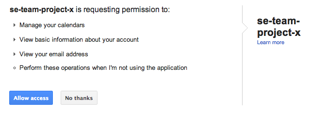
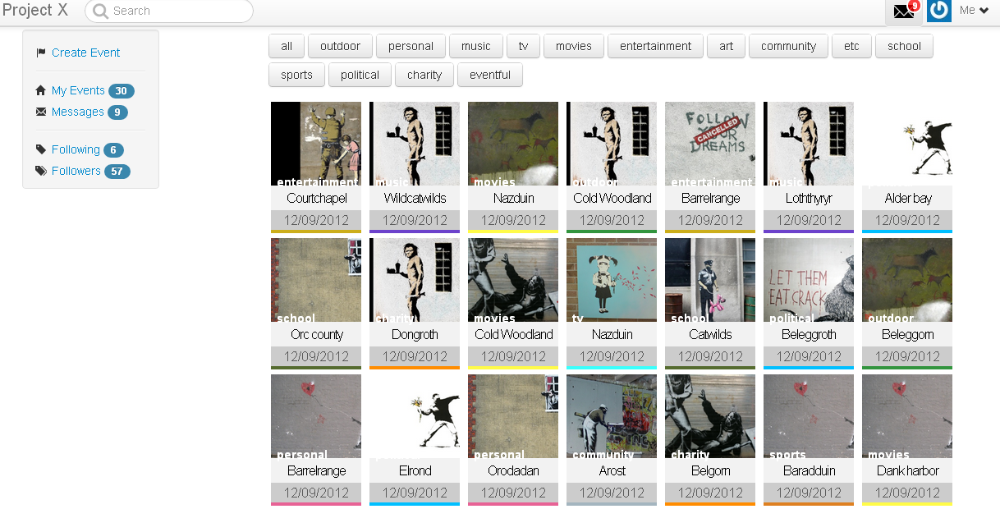
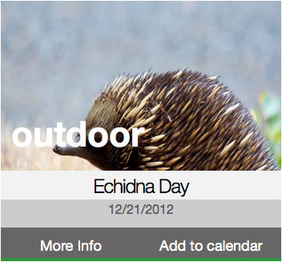
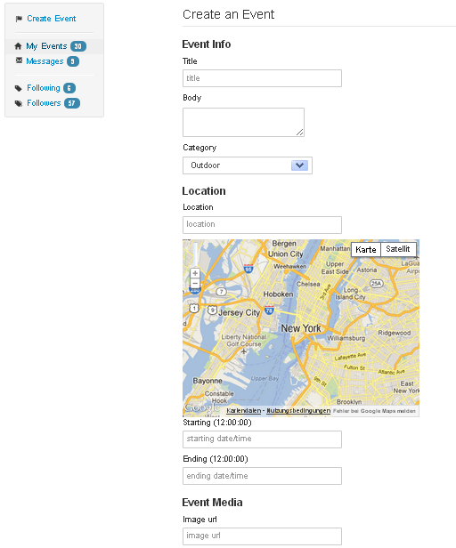
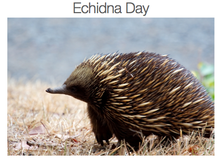
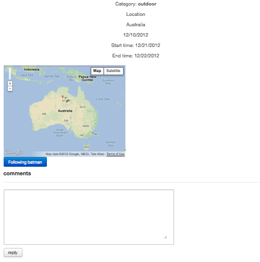

Login
Do you have a Google account? If so, then you are well prepared to use Project-X.
If not, create your Google account here.

Allow access
By granting Project-X access to your Google account you are authorizing us to access the information necessary to enable you to add Events of your choosing to your Google Calendar. For this to work Google provides Project-X with a temporary OAuth token necessary to post these events to your Calendar.

The Event Stream
Here you can search and filter through a myriad of Events. Events are categorized so that you can easily filter the Stream the category selected - click a category to filter.
Choose between: Outdoor, Personal, Music, TV, Movies, Entertainment, Art, Community, School, Sports, Political, Charity, Etc (for Events not covered by these categories), or All (to unfilter).
Categories are readily identifiable by their associated color.

The Event Stream represests all of the Events in our database and even some form external sources that are not yet within the database, but which are automatically added when a user expresses interest in the Event by choosing to add it to their Calendar; by doing this we are able to keep our database concise and store Events more appropriate to users' interests.
Event Tiles
Each Event is represented by a tile in the Stream.
Click on a tile to expand it and reveal further options - "More Info" to view the Event's detail page, or "Add To Calendar" to add it to your Google calendar.

Using AJAX the Event Stream is updated automatically, without page reload, in real-time, as new events are created.
Creating Events
To create an Event click on "Create Event" in the sidebar and then fill in the form.
Enter the details of the Event, select a category, and enter the URL of an image to be shown in the tile and detail page.
If there is no location, as in the case of a TV event, this field may be left blank.

Event Detail Pages
After expanding a tile and click "More Info" to view that Event's detail page.
Here you can learn more about the Event - read a detailed description, get the address/location and view it on a Google map, get the date and time details, read user comments and post your own, and opt to follow the event's creator to add their events to your Stream.

